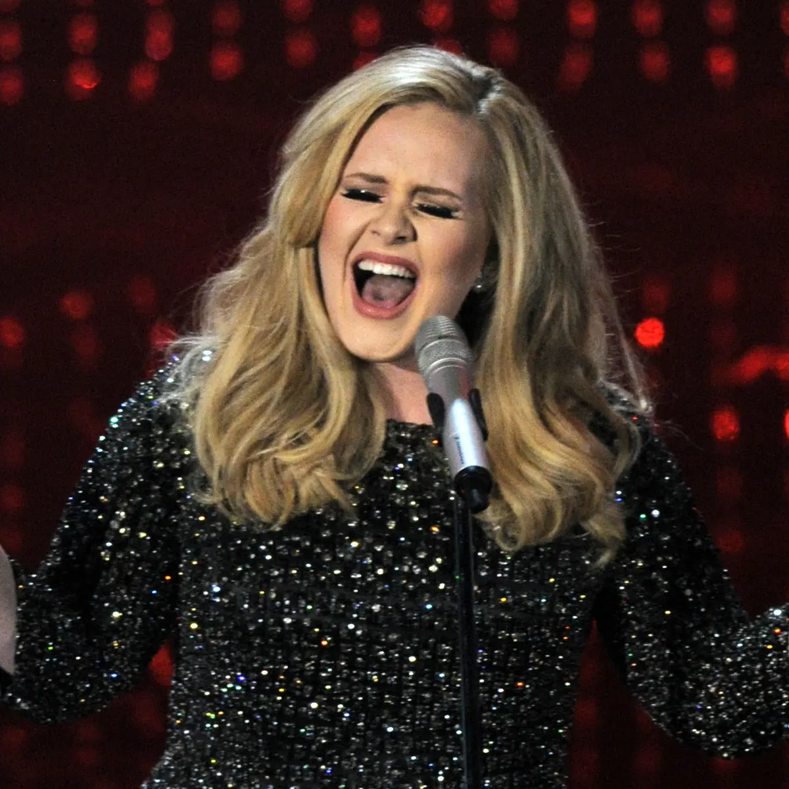
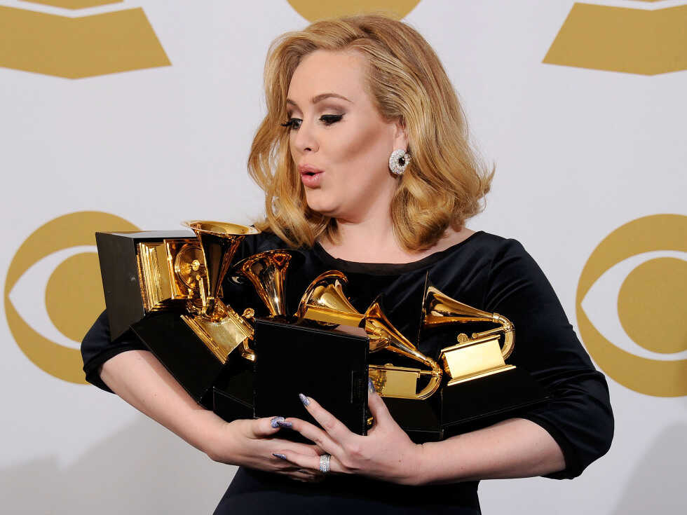

ADELE LAURIE BLUE BIOGRAPHY
Adele a "regular girl" who is now among the greatest singers

Category: Arts & Culture
Byname of: Adele Laurie Blue Adkins
Born: May 5, 1988, Tottenham, London, England (age 35)
Awards And Honors: Grammy Award for best new artist Grammy Award (2017) Grammy Award (2011) Grammy Award (2008)
Years active 2006 – present
Spouces 2 Simon Konecki (m. 2018; div. 2021)
Children 1
Labels XL .Columbia Melted Stone
Well known for her mezzo-soprano vocals and sentimental songwriting. Adele has received numerous accolades including 16 Grammy Awards, 12 Brit Awards (including three for British Album of the Year), an Academy Award, a Primetime Emmy Award, and a Golden Globe Award.
English singer-songwriter Adele has received various awards and nominations. She is the recipient of twelve Brit Awards, an Academy Award, a Primetime Emmy Award, a Golden Globe Award, sixteen Grammy Awards, eighteen Billboard Music Awards, five American Music Awards, and two Ivor Novello Awards for Songwriter of the Year.
Adele signed a contract with the record label XL Recordings in September 2006.[1] She won the BBC Sound of 2008, an annual poll awarded to recognise newcomers in the music industry.[2] Later in the same year, she won the Brits Critics' Choice, and released her debut album 19 to international success.[3] Adele named the Best New Artist at the 51st Annual Grammy Awards, while "Chasing Pavements" – received three nominations for Record of the Year, Song of the Year, and Best Female Pop Vocal Performance, winning the later award. Her debut single "Hometown Glory" earned another nomination for Best Female Pop Vocal Performance at the 52nd Annual Grammy Awards.
Adele's second studio album 21 was released in January 2011 and held the top position for 24 weeks in the United States.[4] Three of its singles—"Rolling in the Deep", "Someone like You", and "Set Fire to the Rain"—reached number one on the Billboard Hot 100.[5] The former won three Grammy Awards – Record of the Year, Song of the Year, and Best Short Form Music Video. 21 won Album of the Year and Best Pop Vocal Album. "Someone like You" and "Set Fire to the Rain" won Best Pop Solo Performance at the 54th and 55th Annual Grammy Awards, respectively. Adele was awarded several other accolades, including the Echo Music Award for Album of the Year, and won in 12 Billboard Music Award categories. In 2012, she released "Skyfall", a song of the 2012 James Bond film of the same name.[6] The song won a Brit Award for British Single; the Academy Award, and Golden Globe for Best Original Song; and a Grammy Award. Adele received five awards at the 2016 Billboard Music Awards, including one for her third studio album 25. She also won the British Album of the Year at the 36th Brit Awards, in addition to winning three other awards. The album also won Grammy Awards for Album of the Year and Best Pop Vocal Album, and the single "Hello" received Record of the Year, Song of the Year and Best Pop Solo Performance at the 59th Annual Grammy Awards. After a six years hiatus, Adele released her fourth studio album 30 to critical acclaim and global success. The album has garnered her four nominations at the 42nd Brit Awards, including her third consecutive win for British Album of the Year. The album also received six nominations at the 65th Annual Grammy Awards, including her third consecutive nomination for Album of the Year.
Adele is one of the world's best-selling music artists, with sales of over 120 million records worldwide. The best-selling female artist of the 21st century in the UK,[7] she was named the best-selling artist of the 2010s decade in the US and worldwide.[8] Her studio albums 21 and 25 were the top two best-selling albums of the 2010s in the UK and both are listed among the best-selling albums in UK chart history, while in the US both are certified Diamond, the most of any artist who debuted in the 21st century.
AWARDS

Grammy Awards
Adele has been nominated for 18 Grammys and won a total of 15 at the awards ceremonies in 2009, 2012 and 2017. She also received a songwriting Oscar for the James Bond track "Skyfall."
At the 2009 Grammy awards, Adele took home Best New Artist. In addition, the album earned the singer the distinction of being named the "Sound of 2008" by the BBC. That same year, she earned the Critics' Choice prize at the BRIT Awards.
In 2012, Adele swept the Grammy Awards, taking home six wins, including Album of the Year. "This record is inspired by something that is really normal and everyone's been through it—just a rubbish relationship," she said at the ceremony.
In 2013, Adele won her seventh Grammy (Best Pop Solo Performance) for her hit single "Set Fire to the Rain." That same year, the singer won a Golden Globe and an Academy Award for "Skyfall," the theme song for the 2013 James Bond film of the same name.
In 2016, Adele performed the ballad "All I Ask," co-written by Bruno Mars, on the 58th Annual Grammy Awards while dealing with technical glitches from the accompanying piano.
In 2017, Adele returned to the Grammy stage and had to stop her tribute to the late George Michael, a slowed down version of his song "Fastlove," and start over, saying: "I'm sorry — I can’t mess this up for him." She went on to sing the song to a standing ovation. She then swept the awards with five wins for her work on 25, including album, record and song of the year, as well as Best Pop Solo Performance and Best Pop Vocal Album. With her historic wins, Adele became the first artist in Grammy history to sweep the top three categories twice.
In her acceptance speech for album of the year, she acknowledged fellow nominee Beyoncé and her groundbreaking album Lemonade. “But my artist of my life is Beyoncé, and this album for me, the Lemonade album, was just so monumental," she said.
HUSBAND AND CHILD
In 2011, Adele met her former partner Simon Konecki, who is 13 years her senior and the founder of Life water and the charity Drop4Drop. On June 29, 2012, Adele announced on her website that she was pregnant with the couple’s first child. She spoke to People magazine about being a mother: "I really want to be a mum. I better start getting on with it!" she said. She gave birth to her son Angelo on October 19, 2012.
In early 2017, Adele was spotted wearing a wedding band, sparking marriage rumors. At her January 2017 Grammy acceptance speech, Adele appeared to confirm the rumors by calling Konecki her husband. “Grammys, I appreciate it, the Academy, I love you, my manager, my husband and my son – you’re the only reason I do it,” she said at the time. Although in interviews backstage she referred to Konecki as her “partner,” she confirmed her marriage in March during a concert in Brisbane, Australia.
In 2015, Adele said, "I'm a feminist, I believe that everyone should be treated the same, including race and sexuality".[238] Supportive of the LGBT community, on 12 June 2016, an emotional Adele dedicated her show in Antwerp, Belgium, to the victims of the mass shooting at a gay nightclub in Orlando, Florida, United States, earlier that day, adding, "The LGBTQ community, they're like my soul mates since I was really young, so I'm very moved by it."[277][278]
In April 2018, it was widely reported that Adele had become an ordained minister in order to officiate at close friend comedian Alan Carr's wedding to Paul Drayton, something which Adele herself subsequently confirmed. The wedding, held in January 2018, took place in the garden of her house in Los Angeles, California.[279]
On 14 October 2023, during a concert of her Weekends with Adele residency, the singer revealed that she had suffered from "borderline alcoholism" since her 20s, and that she had been sober for three months.[280]
WEALTH
In 2012, Adele topped the List of Richest Young Musicians under 30 in the UK, included on the Sunday Times Rich List.[284] In July 2012, she was listed at number six in Forbes list of the world's highest-paid celebrities under the age of 30, having earned £23 million between May 2011 and May 2012.[285] For six consecutive years, from 2013 to 2018, Adele topped the List of Richest Young Musicians under 30 in the UK and Ireland as part of the Sunday Times' annual Rich List.[286] In 2015, Adele said she declined all sorts of lucrative endorsement offers out of personal choice.[287] In 2015, she reported paying £4 million tax in the UK.[288] In July 2016, Adele was ranked number nine on the Forbes list of the 100 highest-paid celebrities in the world.[289] In November 2016 and November 2017, she was in second place on the Forbes list of the world's highest-paid women in music, earning US$80.5 million and $69 million, respectively.[290] The Sunday Times Rich List valued her wealth at £125 million in 2017, and she was ranked the 19th UK's richest musician overall whilst being the only woman in the top 20.[291] Adele owns and operates two companies, Melted Stone Ltd and Melted Stone Publishing.[292] In 2017, she earned $11.2 million in royalties from record sales, after taxes, according to official documents from her companies, without any new album release at the time, and whilst spending her time off.[293] On the 2019 Sunday Times Rich List, Adele was valued at £150 million (US$180.5 million) as the 22nd-richest musician in the UK despite not having toured since 2017.[294]
In 2012, Adele and then-partner Konecki purchased a $3.4 million Art Deco villa in Portslade, on the outskirts of Brighton and Hove, which she sold for $3.7 million in 2016. That same year, she bought two houses built side-by-side in Kensington for $7.7 million and $7.3 million, respectively, with the intention of combining them. Adele also bought a home for her mother in West London for around $817,000.[295] In 2013, she temporarily rented Paul McCartney's 12,000-square-foot (1,100 m2) former mansion for an undisclosed price. In 2015, Adele purchased a $5.2 million Mediterranean-style vacation mansion in Malibu, California, and sold it in 2017 for less than its original purchase price, $4.8 million.[295] She envisioned buying several properties on the same street in a Beverly Hills gated community, beginning with the first home purchased for $9.5 million from Don Mischer in 2016.[296][297] During her Madison Square Garden tour in September 2016, Adele rented NBA player Deron Williams' Tribeca apartment for three weeks at a monthly rent of $60,000.[298][295] In 2017, she and Konecki purchased a $5.3 million Tudor mansion called Ridge Hill Manor, located in the English countryside on the outskirts of East Grinstead.[295] In 2019 and 2021, Adele bought two more Beverly Hills mansions for $10.65 million and $10 million, respectively; the latter was purchased from Nicole Richie and her husband, Joel Madden.[299][300] In February 2022, it was reported she bought Sylvester Stallone's 21,000-square-foot (2,000 m2) former mansion in Beverly Park, Los Angeles, for $58 million.[301][302]